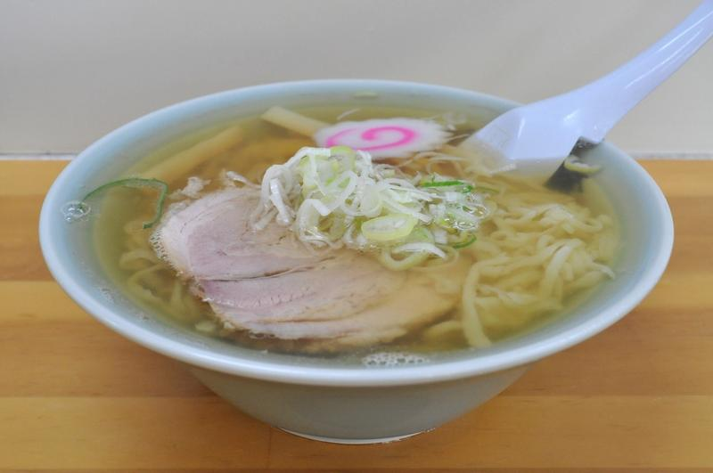
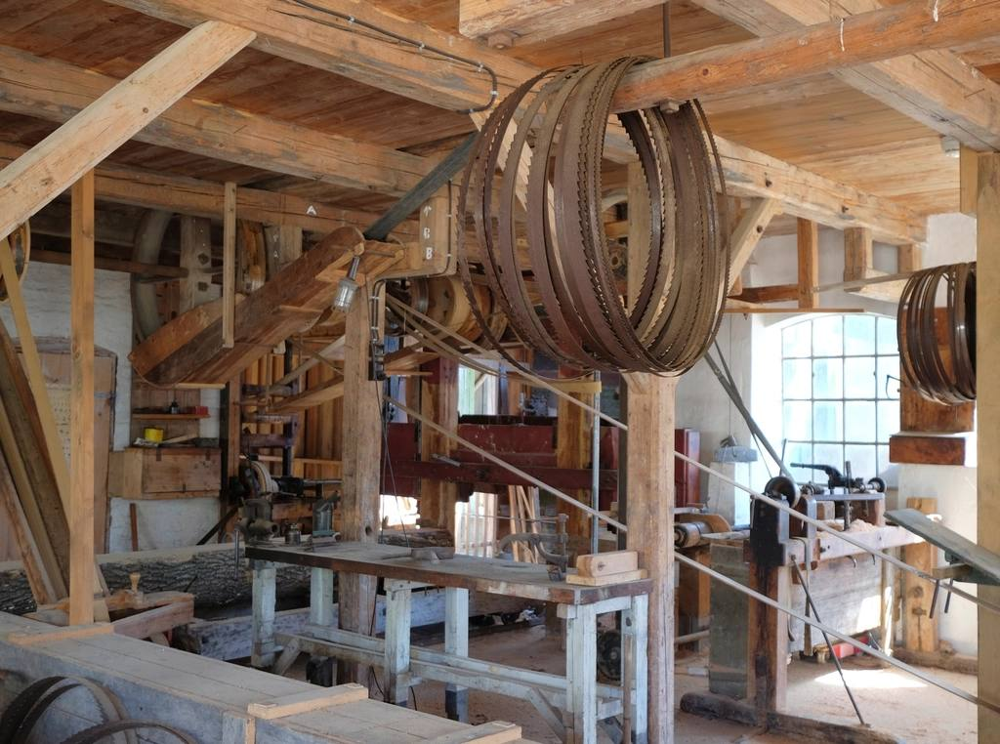
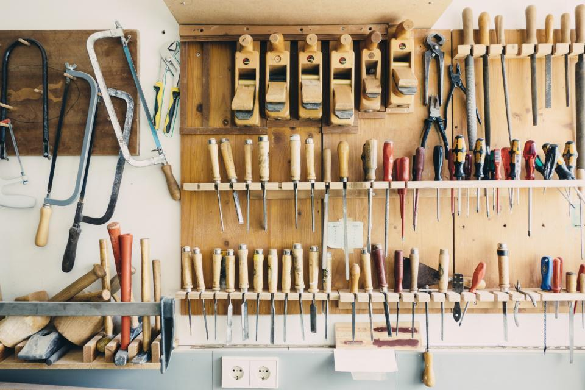
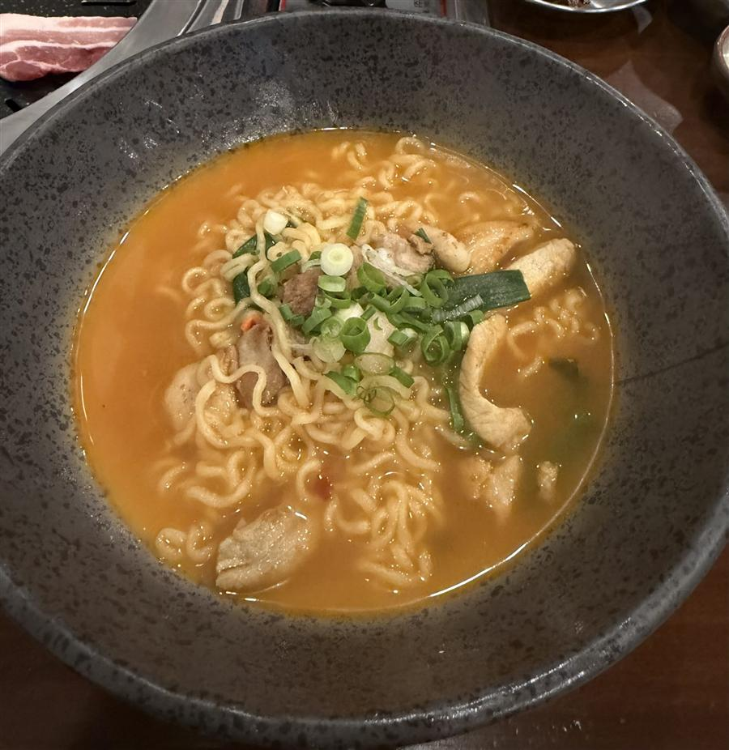
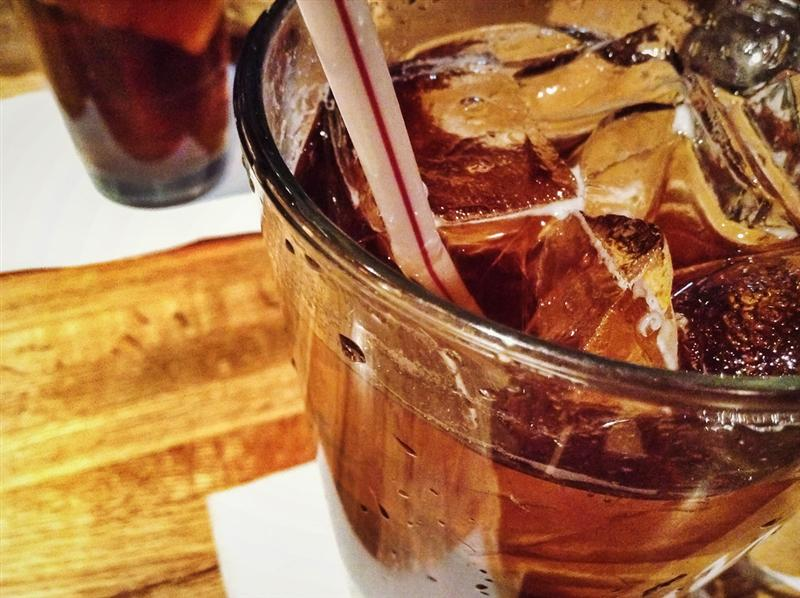
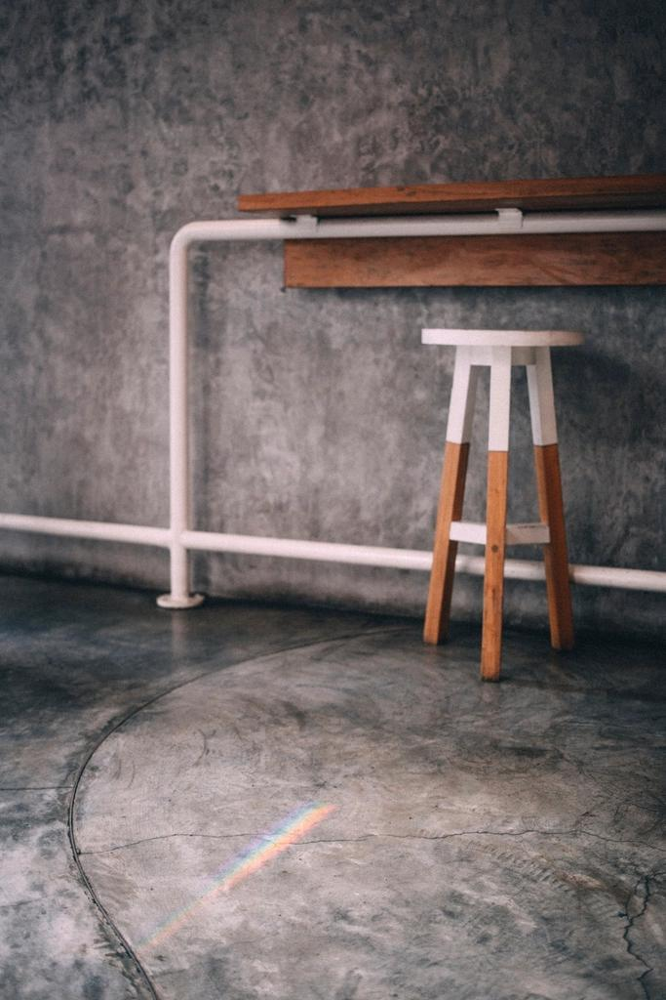

※写真はイメージです全部のせ つけ麺
¥1,300
熱々の石焼き器で運ばれるつけダレは、地元野菜をベースにとろみと旨みが凝縮。つるっともっちり食感の平打ち太麺(製麺所に特注)を冷や盛りで、厚切りの自家製チャーシュー、茹でてから焼き目を入れた野菜とともにどうぞ。お好みでテーブルの自家製ラー油による味変もお楽しみいただけます。
おすすめ
SAMPLE
本文へスキップ
※イメージ写真
新潟県加茂市 幸町 / 昼営業のみ
バイクショップの一角から生まれた、つけ麺と焼麺。
新潟県加茂市、昼だけ営業のガレージ食堂です。
Our Story
麺.spot.土田は、もとはバイクの修理・販売を行う店でした。店長の「料理好き」が高じて店舗を改装し、3月1日に「つけ麺と焼麺」の店としてオープンしました。老舗バイクショップが、地域の交流拠点を目指して始めた麺料理店です。営業は昼のみ。まだ新しくオープンしたばかりのお店ですが、一杯一杯を丁寧に仕上げています。

Ingredients
こだわりの中身

Drink

シナモンの香りと数種類のスパイスを効かせた、ほんのり甘い一杯。麺のご注文で格安に楽しめます。
さっぱりとした飲み口で、食後の口直しにも。麺のご注文で格安に楽しめます。
Interior
もとはバイクの修理・販売店だった空間を活かした店内で、バイクや工具が店の雰囲気の良いアクセントになっています。初めての来店でも気さくに声をかけてもらえる、温かい接客が特徴です。店の前には駐車場が5台ほどあり、車での来店もしやすい環境です。InstagramやYouTubeをきっかけに、新潟県外から訪れるお客様もいらっしゃいます。
Instagramで店内の様子をチェック →
Voice
実際にいただいたご投稿より、一部を抜粋してご紹介しています。
「石焼き器で熱々提供されるつけダレ、地元野菜のとろみと旨み、自家製の厚切りチャーシュー、自家製クラフトコーラまで、随所にこだわりを感じました。」
ご来店のお客様
「InstagramとYouTubeで知って来店しました。期待していた以上にこだわりが伝わる味で、バイク屋さんの雰囲気もいいアクセントになっています。」
県外から立ち寄られたお客様
「濃厚な魚介スープとツルシコ食感の麺、季節の野菜が印象的でした。」
初めてご来店のお客様
「魚介ベースにトマト風味のつけダレで、麺もトッピングも手が込んでいる印象でした。接客も丁寧で、温かさを感じました。」
ご来店のお客様
Access
一部の写真はフリー素材のイメージです。実際の店内・お料理写真は貴店ご提供のものに差し替えます